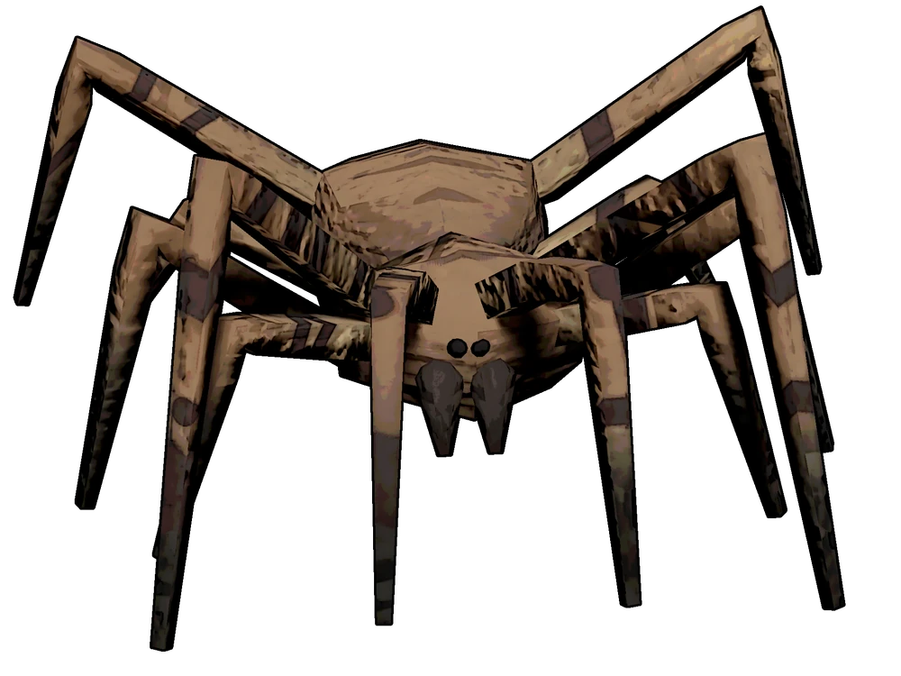
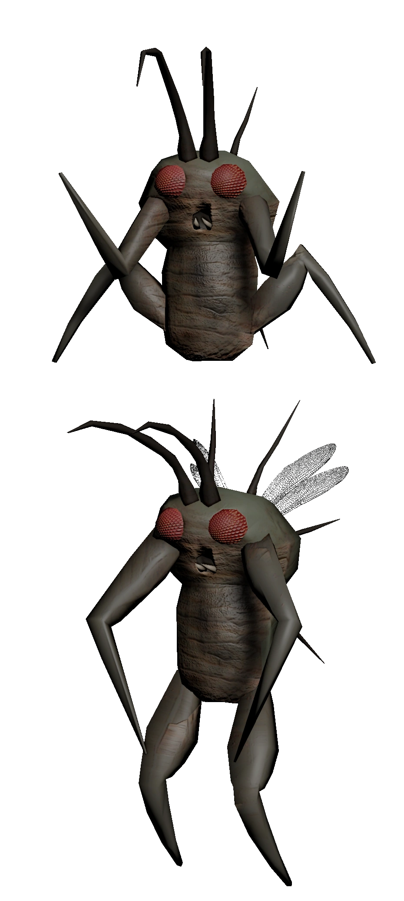
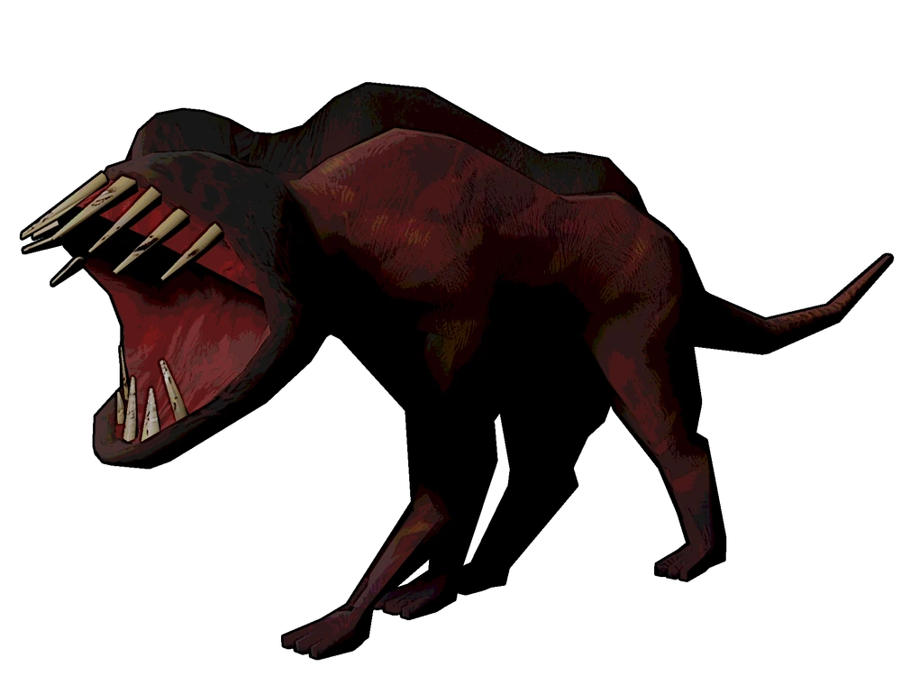
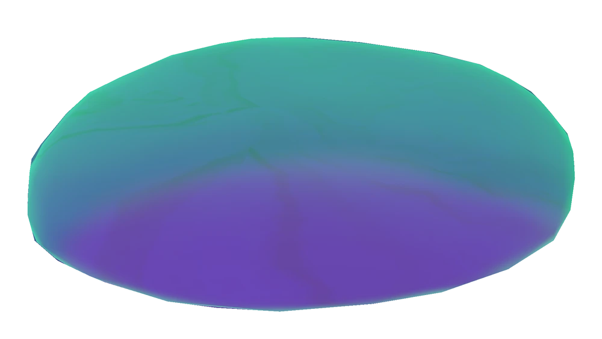

| Home Page | Merch | Moons | Enemies | Items |
Snare Flea:These annoying guys hang on the ceiling of different rooms and drop down if a player goes underneath them. If they land on you, it starts to suffocate you making you slowly lose health. Your ingame voice will be muffled for other players while this happens. The only way to get them off is to hit them with a shovel or exit through one of the doors to get outside since they can't leave.

Bunker Spider:They go throughout the facility placing webs down. If you walk in a web, you will become slower and the spider go to the web you walked into. It takes about 5 hits from a shovel to kill them.

Hoarding Bug:These guys like to take items in the facilities and bring the items a random dead end or corner in the facility. They don't attack you until you either get to close to the items they collected or if you take them. Although they aren't much of a threat, the hoarder bugs usually go to the same corner when dropping their items and they stick together. This means if there are a bunch of them in the same corner and you take one of the items they had, they will all attack you. It takes 2 hits using a shovel to kill them.

Eyeless Dog:The eyeless dogs are one of the enemies that roam outside the facilities. They using spawn at around 4 PM (ingame time) on most of the maps. They are alerted if ANY sound is made (This includes talking ingame with your microphone) and when they are alerted they howl alerting other nearby dogs. You should always crouch while walking if one is nearby and never try and fight them with a shovel as they take 12 hits to kill them and they will one shot you if they manage to get you.

Forest Keeper:The forest keepers roam outside of facilities and are extremely large. They can't hear anything but they have really good eyesight. If they see you, try to run back to the ship or go back into the facility as they outpace you if you don't have any stamina. If they grab you, they consume you and you die. They are also invincible so there's that as well.

Thumper:The thumper is one of the more dangerous enemies as they build up speed after seeing a player and while chasing them. They can kill you in 3 bites which makes them pretty annoying to deal with. If you have a shovel though, then they aren't really that big of a deal as they can't attack you for about a second after being hit with one making it easy to kill them. If you don't have a shovel however, then you should try to take a lot of turns while being chased as if they run into a wall they lose all their speed.
Spore Lizard:Spore Lizards aren't very harmful and really only do anything if you chase them and corner them. If they see you they will try and intimidate you but if you get closer they win run away. If you corner them, they will release purple fumes into the air to blind you for a while. They are also invincible so there really is no reason to do anything to them.

Bracken:The bracken is one of the more dangerous and scary enemies. The bracken likes to hide in corners and then follow whichever player they see and kinda stalk them. They walk behind you until you stop moving which then, they snap your neck so they instakill. If someone's neck gets snapped by them, they take their body to their favorite room in the facility which is usually the room farthest from the entrance. If you look at the bracken they will back away but if you look at them for too long they get mad and then run extremely fast toward you. This means you should look at the bracken for a couple seconds and then run the opposite direction. They die from 3 hits with a shovel and only one can be spawned per moon.

Hygrodere:Hydroderes are just slimes that roam around the facility really slowly. They are invincible and if you step in them you take a lot of damage pretty fast. If one is nearby or it's blocking a path, you can go ontop of a railing to avoid it.
Nutcracker:Nutcrackers are as the name implies, nutcrackers that patrol the facilities with a double barrel shotgun that you can use if you kill them. They are invincible while patrolling and can only be attack once the eye that is hidden under their head is visible. The nutcracker won't know you're next to them while they are in their scanning mode (which is when their eye is exposed) unless you move which moving your camera counts as moving. They can also kick you if they run into you which one shots you. The shotgun shot also one shots and if you are visible to them they're basically guarenteed to kill you so you just hit them and then run behind a wall and repeat to kill them. It takes 5 hits with a shovel to klll them.
Earth Leviathan:Earth Leviations is an enemy that roams underground outside. They come out of the ground and eat anyone that is in their range of attack. When an earth leviathan is under you, you will hear slight grumbling under the ground. When they are coming out of the ground the ground starts rumbling and if you are in the area of the attack, the items you had and you are gone and dead.
Coil-head:Coil-heads are mannequins that only move when nobody is looking at them. They are really fast and basically instantly kill you if they get behind you and nobody looks at them. They are also invincible so if you see a coil-head just walk away from them while looking at them and also close doors behind you as it takes them a couple seconds to open doors which gives you time to run away.
Masked:Masked are employees that are possessed by the mask on their face. There are two masks in the game right now. One is called comedy and one is called tragedy. The comedy mask can be put on and taken off with a chance of the mask possessing you and turning you into a masked every second the mask is on but for the tragedy mask, once you put it on you can't take it off. You can sell both masks for scrap at the company building. Masked employees can also spawn on their own in facilities and they take 4 hits from a shovel to kill them. They can also leave and enter facilities at will and if they get you, they turn you into a masked which also kills you.

Jester:Jesters are jack in the boxes which follow players around randomly and eventually it will enter it's wind up mode. When it is finished winding up which takes around 35-42 seconds, it will enter it's popped mode which slowly builds up speed surpassing the speed of a player sprinting at max speed. There is no way to hide from a jester and the only way to escape it is leaving facility. They are also invincible (to no surprise) so all you can really do is leave.

Baboon Hawk:The Baboon Hawk is an enemy that roams outside the facilities. They kinda just hop towards towards players and will attack you if you get close. They can also roam in packs which then you wanna run away since they can kill you in 4 hits. They can also take items that are dropped near them like hoarding bugs. Baboon hawks by themselves will be intimidated people you so if you're with other people they probably won't attack you. They also attack eyeless dogs and if there are 3 or 4 of them, they will probably kill the dog. It takes 6 hits from a shovel to kill them.
Ghost Girl:The Ghost Girl is probably the most complicated website and i probably wouldn't be able to explain it so here is the link if you want to understand it better.
LINK
Circuit Bees:Circuit Bees is an enemy that swarms around bee hives outside of facilities. They swarm their beehive until a player gets close to them in which they chase down the player and electricute them. The beehive they defend can be sold for scrap at a usually high amount. There is no way to kill them as well.